Diseño digital y desarrollo web — Sant Cugat · Barcelona
Gorchs
Diseño y tecnología para que los negocios crezcan.
Diseño y desarrollo webs y productos digitales para empresas, partiendo de cómo funciona el negocio, a quién quiere llegar y qué necesita para crecer.
- Estado
- Disponible para nuevos proyectos
- Ahora
- Desarrollador web en K·Factor
- Hora local
- Sant Cugat · Barcelona
Diseño que empieza
por el negocio
- 01
¿A quién queremos llegar?
- 02
¿Qué necesita el negocio?
- 03
¿Cómo hacemos la oferta más clara y la experiencia de cliente mejor?
Estas preguntas marcan cómo abordo el diseño y el desarrollo, antes de elegir un color o escribir una línea de código.
Trabajos seleccionados
-
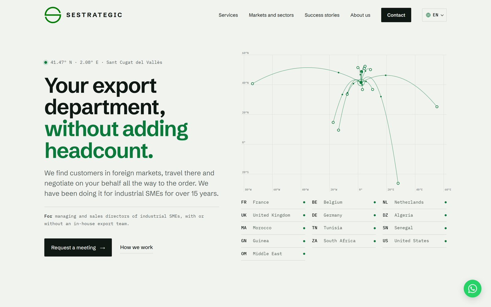
Sestrategic
Web para una consultora de exportación, con un mapa de rutas interactivo.
-
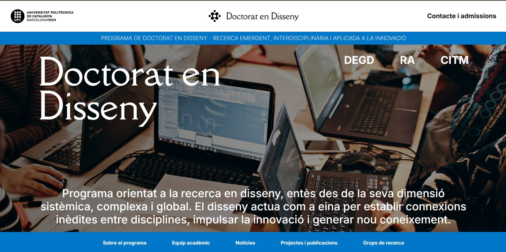
Doctorado en Diseño
Web del Programa de Doctorado en Diseño de la UPC — diseñada y programada.
-
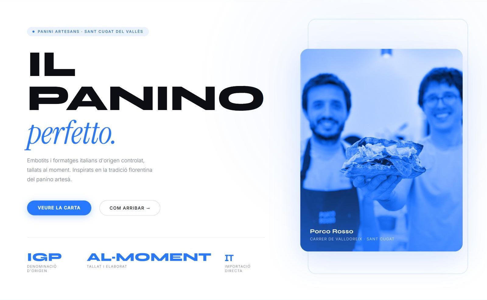
Porco Rosso
Web para una paninoteca artesana de Sant Cugat.
-
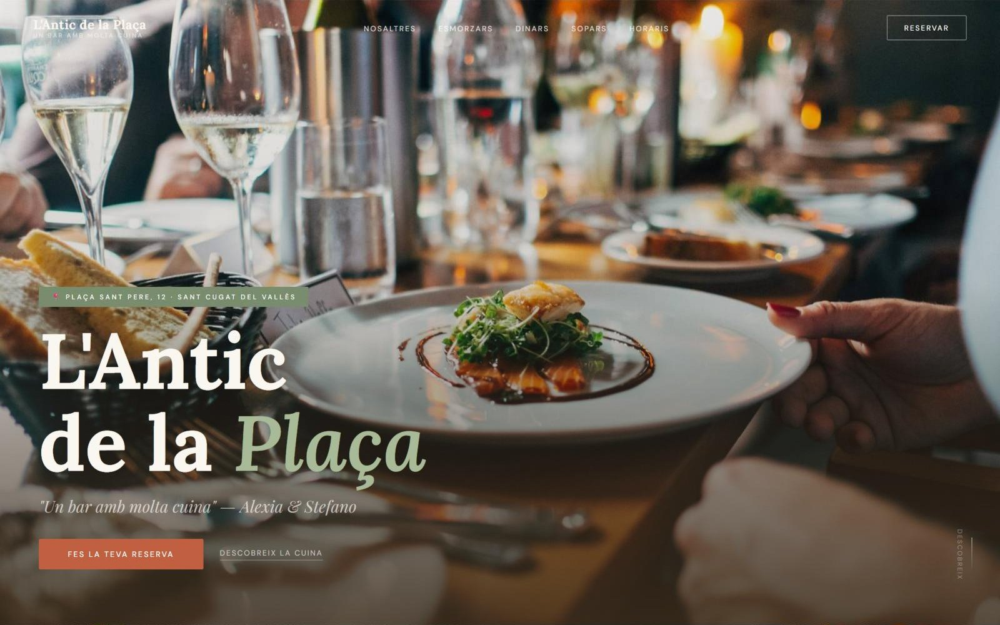
L'Antic de la Plaça
Web para un bar-restaurante de barrio.
-
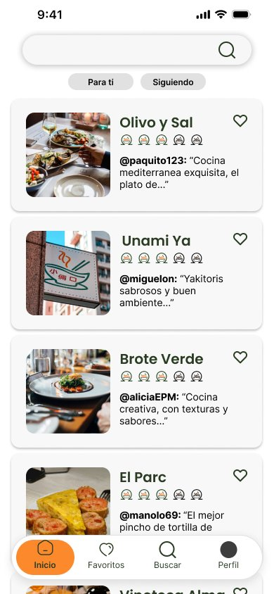
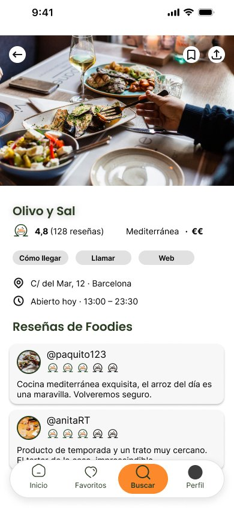
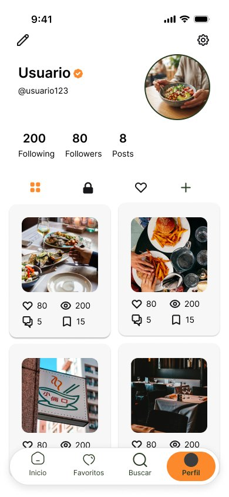
OhM
Una app para descubrir restaurantes basada en reseñas de confianza.
-
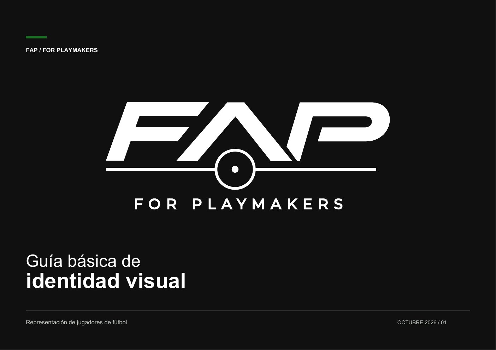
FAP — For Playmakers
Logo e identidad para una agencia de futbolistas.
-
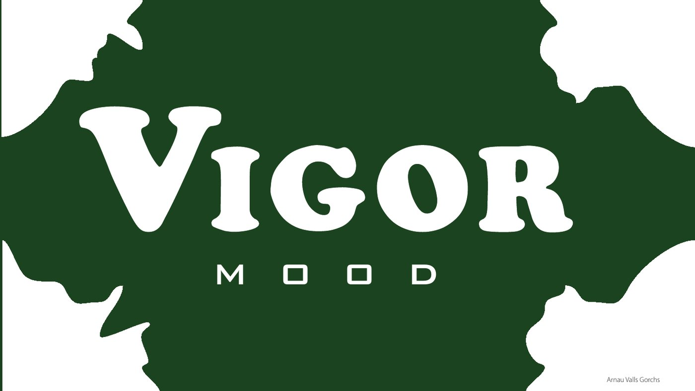
Vigor Mood
Manual de identidad para una marca de bebidas.
-
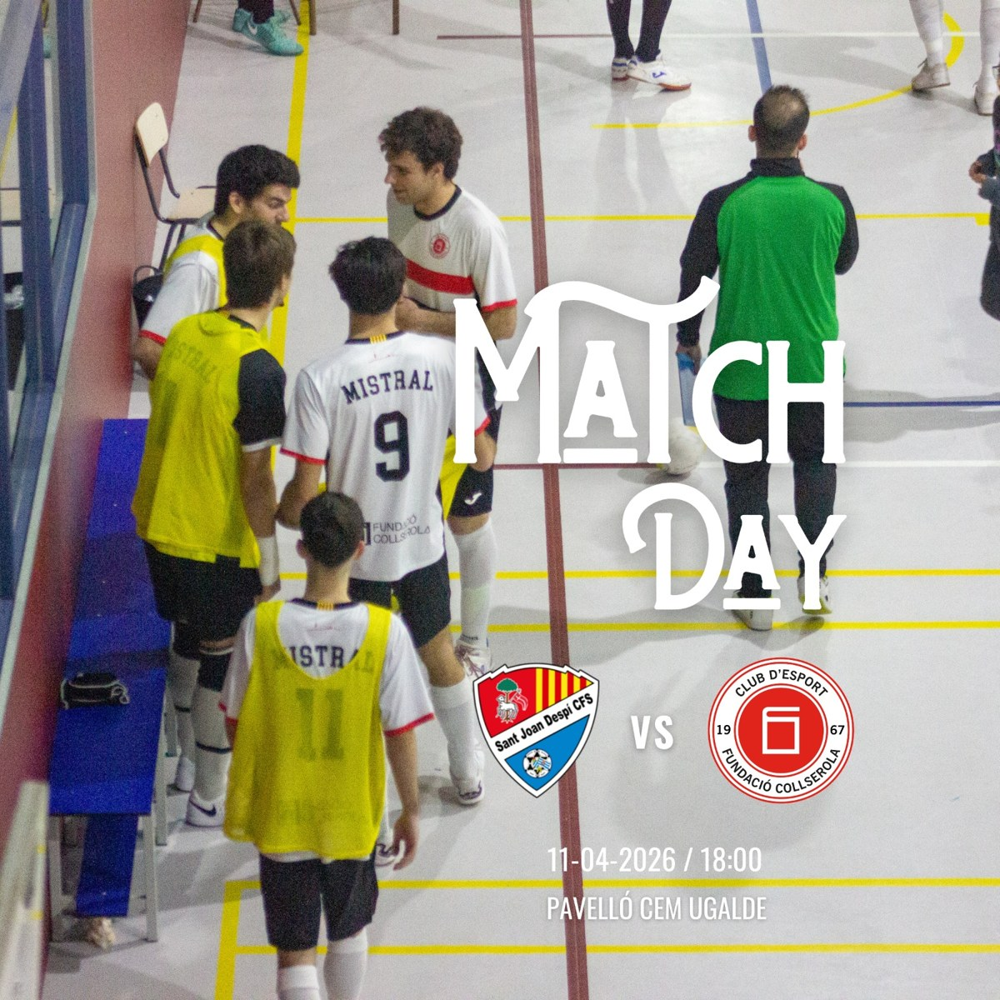
Mistral Futsal
Sistema de Instagram y fotografía de partidos para mi club de fútbol sala.
-
IKEA SKÅDIS
Un anuncio no oficial para un panel organizador, en 16:9 y 9:16.
-
La Corona del Rock
La historia completa de Queen, en un libro impreso.
-
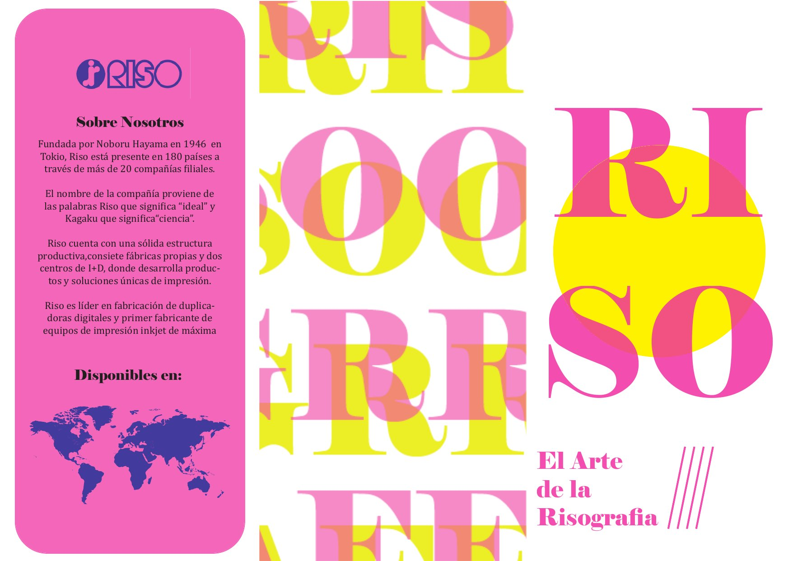
El arte de la risografía
Un tríptico sobre la impresión risográfica.
Cómo puedo ayudarte
-
01Webs para negocios
Webs corporativas y de negocio local, diseñadas y programadas para que el cliente entienda la oferta y sepa cómo contactar.
-
02Productos digitales y apps web
Interfaces, herramientas internas y aplicaciones web: de los flujos UX al desarrollo en PHP y Laravel.
-
03Identidad de marca
Logo, color, tipografía y guía de marca para que el negocio se vea profesional y coherente en todas partes.
-
04Contenido y comunicación
Redes sociales, fotografía, impresión y vídeo corto para que una marca se vea y se reconozca.
Dónde trabajo
-
Sept. 2026 — Actualidad
Desarrollador web
K·Factor Technologies
Diseño y desarrollo de productos digitales, herramientas internas y aplicaciones web escalables.
Jornada parcial · Híbrido · Barcelona -
May. — jul. 2026
Web Developer
Centre de la Imatge i la Tecnologia Multimèdia — CITM (UPC)
Prácticas · En remoto -
Freelance
Proyectos digitales con clientes
Por cuenta propia
Traducir las necesidades de cada cliente en soluciones prácticas que reflejen su negocio y sus objetivos.
-
Formación
Diseño Digital y Tecnologías Multimedia
Universitat Politècnica de Catalunya (UPC) · CITM
Hola, soy Arnau.
Soy diseñador digital y desarrollador web con un fuerte interés por el mundo empresarial: entender cómo funcionan las empresas, detectar oportunidades de mejora y explorar cómo el diseño y la tecnología pueden ayudarlas a atraer clientes y crecer.
Estudio Diseño Digital y Tecnologías Multimedia en la UPC y lo combino con experiencia profesional en desarrollo web. También trabajo con clientes en proyectos digitales.
Busco oportunidades donde aportar mis capacidades creativas y técnicas mientras profundizo en análisis de negocio, estrategia digital y necesidades del cliente.
¿Necesitas una web más clara, un producto digital o una marca más sólida? Cuéntame tu negocio y qué quieres conseguir.
avallsgorchs@gmail.com